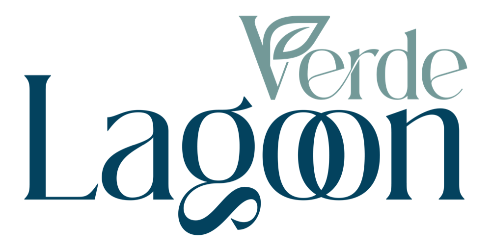

DND PROJELERİ
360° GÖRÜNÜM
DND PROJELERİ
360° GÖRÜNÜM

360° SANAL TUR
Daireleri, lagün havuzunu ve sosyal alanları panoramik olarak keşfedin.
Bahçeler, İskele — Kuzey Kıbrıs
Bu turdaki panoramalar tamamlanmış yapının fotoğrafı değildir; projenin kendi render ve katalog görsellerinden hazırlanmış görselleştirmelerdir. Malzeme, renk ve donanım seçenekleri değişebilir.